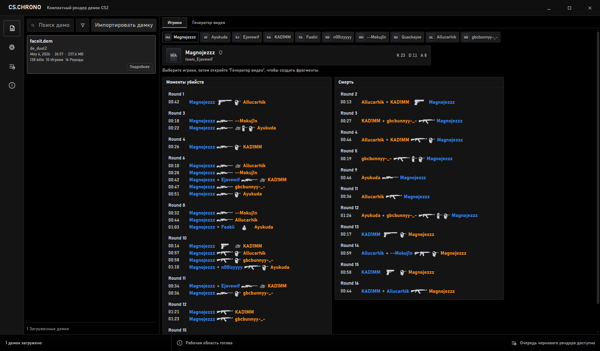
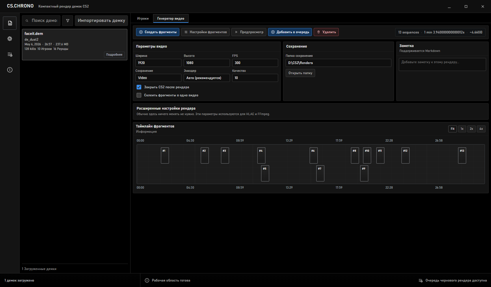
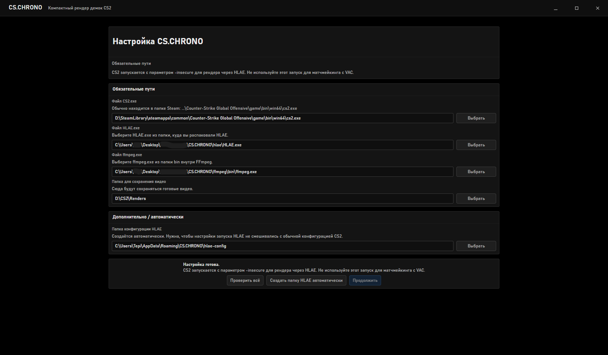
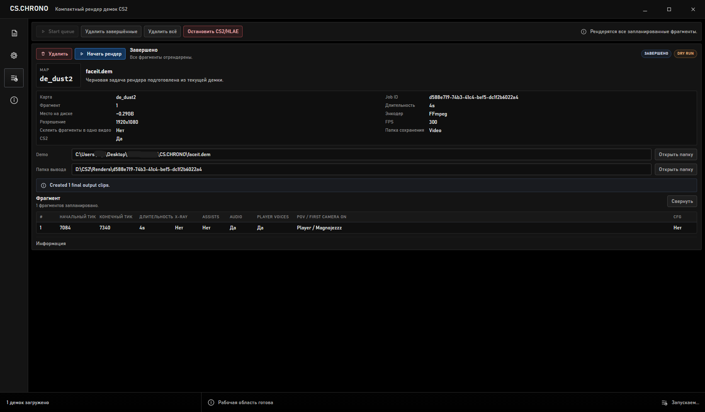

Загрузите демку
Выберите файл .dem. Программа покажет карту, игроков, раунды и основные события.
 CS.CHRONO
CS.CHRONO
Хайлайты из CS2 demo
CS.CHRONO помогает быстро найти нужные моменты в демке и собрать из них видео. Загрузите demo, выберите игрока, отметьте фрагменты и отправьте задачу на рендер.

Как это работает
Выберите файл .dem. Программа покажет карту, игроков, раунды и основные события.
Откройте вкладку с игроками и посмотрите, у кого есть нужные моменты.
Добавьте моменты вручную или создайте их автоматически по выбранному игроку.
Добавьте фрагменты в очередь. CS.CHRONO запустит запись и сохранит готовое видео.
Генератор видео
На экране генератора видно, какие фрагменты готовы, куда сохранить результат и какие базовые параметры видео выбраны. Сложные настройки спрятаны отдельно, чтобы не мешать работе.

Можно подготовить сразу несколько моментов и отправить их в очередь одной задачей.
Программа сама подбирает подходящий способ сохранения видео на вашем ПК.
Не нужно искать отдельные файлы или настраивать оверлей вручную.
Распакуйте архив в удобную папку и запускайте программу без установщика.

Первый запуск
HLAE и FFmpeg нужно скачать отдельно. После проверки программа запомнит пути и будет использовать их сама.
Очередь
В очереди видно статус задачи, выбранные фрагменты, папку сохранения и логи. Если CS2 или HLAE зависли, их можно остановить прямо из программы.

Beta 1.1
Скачайте архив, распакуйте его в удобную папку и запустите CS.CHRONO.exe. Для рендера нужен лицензионный ключ.
FAQ
Нет. Их нужно скачать отдельно и указать при первом запуске или в настройках.
Для записи CS2 запускается с -insecure. Для матчмейкинга закрывайте этот запуск и открывайте CS2 обычным способом.
В %APPDATA%\CS.CHRONO. Поэтому программу можно переносить, не смешивая её с личными настройками.
Проверьте пути к HLAE, FFmpeg и CS2, затем откройте логи задачи в очереди. Ещё стоит убедиться, что сама демка открывается в CS2.